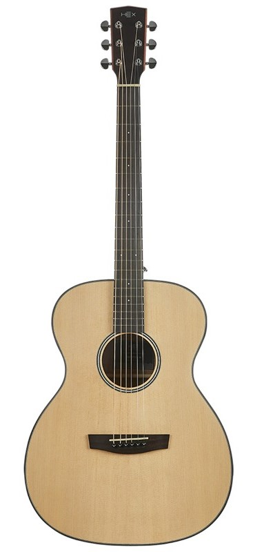

Classic Guitar
 Yamaha C40 야마하 제품 중 가격이 가장 저렴한 편인 풀 사이즈형 클래식 모델 |
Cordoba C1M 부담 없는 가격으로 쉽게 접근할 수 있는 유명한 모델 |
Jose Ramirez R1 CWE José Ramirez는 세계에서 제일 저명한 클래식 기타 제작의 명문 |
Folk Guitar
|
고퍼우드 i100 중저음에 최적화된 고퍼우드 i 시리즈 |

HEX F100 M 육각천공 디자인은 HEX만의 디자인으로 전체적인 밸런스를 잡아줍니다. |
크래프터 HT-250 더 많은 저음 및 우디한 사운드, 더 좋은 서스테인 |
Electric Guitar
|
Fender Stratocaster 스트랫은 펜더사를 대표하는 마스코트와 같은 제품이다. |
Gibson Les paul 깁슨사에서 개발한 시리즈로, 펜더의 스트랫과 더불어 가장 유명한 기타입니다. |
Fender Telecaster 펜더 최초의 양산형 일렉트릭 기타이자 세계최초의 양산형 일렉트릭 기타이다. |